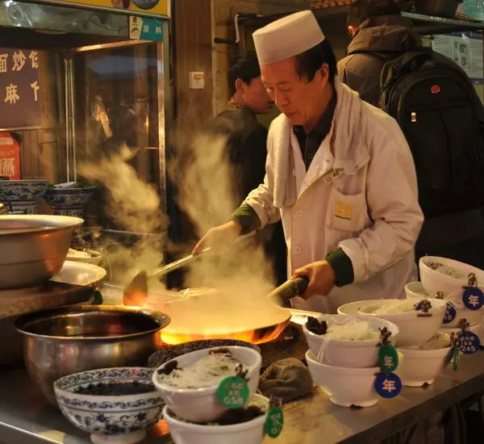

Cooking is a basic life skill that has been forgotten and not recognized enough as more and more people rely on uber eats and fast food restaurants. Learn to be a good chef can make you stand out in family and friend gatherings.
Cooking, also known as cookery, uses heat to make food more palatable, digestible, nutritious, or safe. Cooking techniques and ingredients vary widely, from grilling food over an open fire, to using electric stoves, to baking in various types of ovens, to boiling and blanching in water, reflecting local conditions, techniques and traditions. Cooking is an aspect of all human societies and a cultural universal.
Preparing food with heat or fire is an activity unique to humans. Archaeological evidence of cooking fires dates to at least 300,000 years ago, but some estimate that humans started cooking as early as 2 million years ago.
The expansion of agriculture, commerce, trade, and transportation between civilizations in different regions offered cooks many new ingredients. New inventions and technologies, such as the invention of pottery for holding and boiling of water, expanded cooking techniques. Some modern cooks apply advanced scientific techniques to food preparation to further enhance the flavor of the dish served.
1. Read the whole recipe have an idea about your general cooking process. If you don't have a recipe, have a basic idea of what you will cook and how. 2. Work clean like a factory line by prepping all ingredients in advance.
1. Preheat you pan until it is hot and shimmering before adding in ingredients. 2. Never overcrowd the pan or you food will cook unevenly and will be harder to control
1. Season as you go rather than dumping all the salt at the very end. 2. Be sure to shut down your fire before enjoying your meal.
